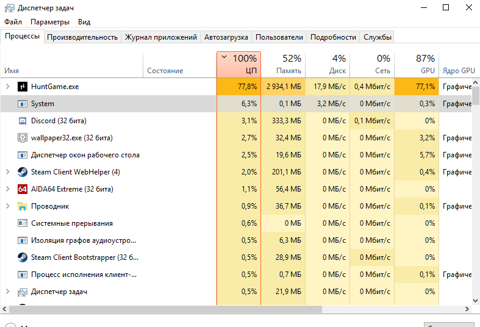
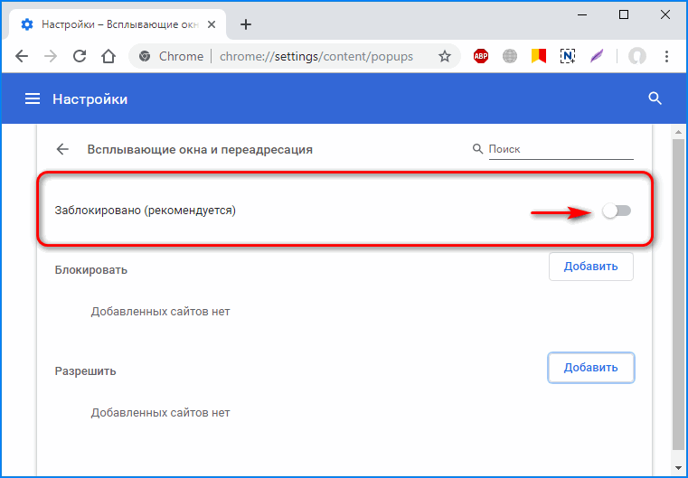
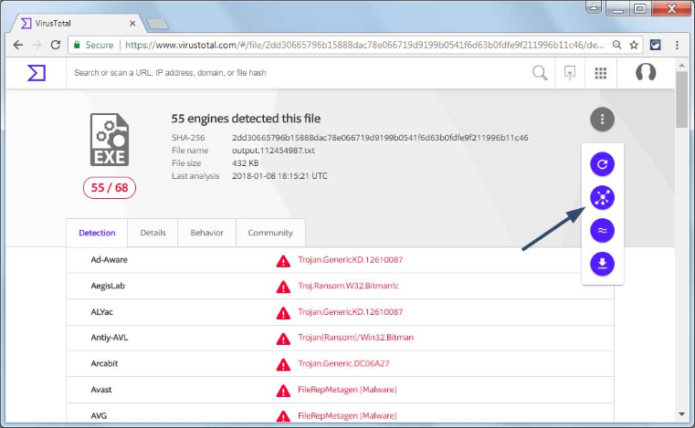

В 2017 году в России случился настоящий бум криптовалют.
Возросший курс биткойна и его аналогов привлёк к теме внимание мошенников и хакеров,
которые начали добывать виртуальные монетки нечестным способом:
в интернете появились вирусы-майнеры, превращающие заражённые компьютеры в сеть майнинговых ферм.
С миру по нитке — вот и получается гигантская майнинг-ферма с огромной производительностью,
приносящая десятки тысяч долларов ежемесячно.
Схема обмана проста и надёжна: хакеры запускают в интернет
вирусы, которые распространяются через почтовые вложения или
сайты-источники скачиваемого контента. Виртуальные «чёрные шахтёры»
завладевают мощностями заражённого компьютера: хакерам сыплются виртуальные монеты,
а жертве — счета за электричество.
•Злоумышленник загружает вирус на сайт вместе с файлом который вы хотите скачать.
• Файл скрывается, маскируется под изначально безобидный ,и ожидает своей транспортировки в ПК.
Работа майнера после транспортировки в ПК.
• Проникнув, в ПК майнер старается полностью скрыться и не сразу начинать свою активность.
• Прижившись вирус начинает свою деятельность, он начинает использовать ресурсы ПК и добывать криптовалюту.
Выявление майнера.
• Вирус майнер часто себя выдает несколькими способами
• Зараженное устройство постоянно ощутимо нагревается. Если это компьютер, то он сильно шумит
(так как увеличивается нагрузка на процессор и видеокарту, а из-за нагрева система охлаждения начинает работать на полную катушку).
• Устройство начинает подтормаживать даже в фоновом режиме, когда вы открываете всего одну вкладку браузера и раскладываете пасьянс.
• Более продвинутые пользователи могут заметить в “Диспетчере задач” большое количество процессов с непонятными, незнакомыми названиями
(чаще всего случайным набором букв вместо названий, типа “asikadl.exe”), а также аномально большую нагрузку на процессор (CPU) или видеокарту (GPU)
Для того, чтобы успешно скрываться внутри системы, вирус-майнер может:
• Маскироваться под системные процессы (например, называя себя “winlogon.exe” или “MSOFFICE.EXE”).
• Пытаться отключить установленное на устройстве антивирусное ПО.
• Отключаться, если пользователь начинает просматривать список запущенных процессов или запускает какое-либо приложение/игру,
требующее большого количества вычислительных ресурсов.
• Проверять свою целостность и даже переустанавливаться в случае удаления важных вредоносных файлов.

• Мы узнали, что оставлять майнер без дела нельзя, поэтому нужно как то защититься.
• Не открывайте сообщения электронной почты от незнакомых отправителей или незнакомые вложения.
Многие вирусы передаются в виде вложений в электронные письма, и для их распространения достаточно открыть вложение.
• Используйте блокирование всплывающих окон в браузере. Всплывающие окна — это небольшие окна браузера, которые отображаются поверх просматриваемого веб-сайта.
Несмотря на то, что большинство таких окон используется для рекламных целей, в них может содержаться вредоносный или небезопасный код.
Блокирование всплывающих окон позволяет избавиться от некоторых или даже всех всплывающих окон.
• Регулярно обновляйте Windows. Корпорация Майкрософт регулярно выпускает особые обновления для системы безопасности, предназначенные для защиты компьютера.

VirusTotal — бесплатная служба, осуществляющая анализ подозрительных файлов и ссылок на предмет выявления вирусов,
троянов и всевозможных вредоносных программ. VirusTotal награждён американским изданием PC World Magazine как один из 100 лучших продуктов 2007 года.
Более 60 антивирусных движков используются для проверки ссылок и файлов. Сравнив вирус тотал с остальными сайтами для проверки файлов от вредоносного ПО,
он остается самым надежным и быстрым.
